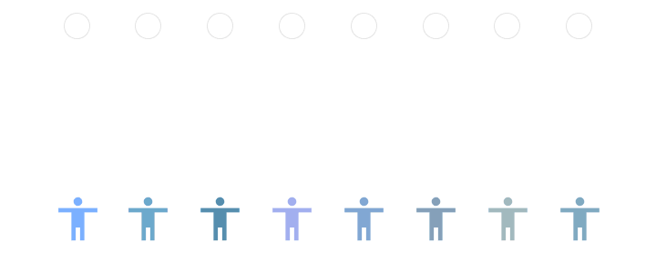

Data-based decision-making systems are increasingly affecting people’s lives. Such systems decide whose
credit loan application is approved, who is invited for a job interview and who is accepted into
university.
This raises the difficult question of how to design these systems, so that they are compatible with
fairness
and justice norms. Clearly, this is not simply a technical question - the design of such systems
requires an
understanding of the social context of these applications and requires us to think about philosophical
questions.

Over the past few years, the adoption of AI models has skyrocketed, and more decisions have been taken
by
such algorithms. Machine learning models provide good prediction results, but the predictions may not be
interpretable most of the time. The wide adoption of such models and the decisions that already directly
impact our lives and their use have led to rising concerns about the fairness and trustworthiness of
such
models.
In 2018 a study was commissioned by the Council of Europe's Committee of experts on human rights. It was
prompted by concerns about the potential adverse consequences of advantages of digital technologies,
including AI, within a Human Rights Framework. An important aspect of the study was conducted around the
ethics of AI. Ethics in AI represents guarding against certain kinds of discrimination and, if possible,
encoding the abstract concept of fairness into the system. Even if we are trying to capture, encode and
program such guards into the trained models, other complex data patterns might capture the bias and make
it
invisible to such guards. A fair dataset will produce fair models, but the machine learning models are
only
as good as the data they are trained on: ”bias in, bias out”.